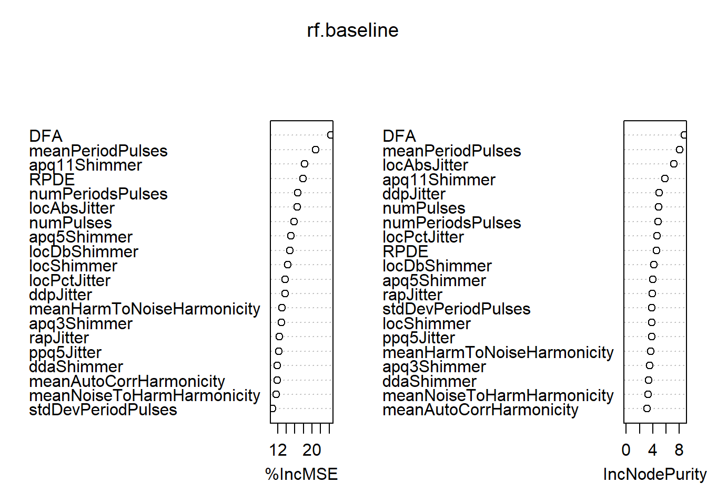

2 Dataset
2.1 Preprocessing and Standardization
For ease of analysis, the ensemble data set (both training and test) are broken into the following sub feature categories:
- Baseline Features
- Time Frequency Features
- Intensity based
- Formant and Bandwidth based
- Vocal Fold Features
- Mel Frequency Cepstral Coefficients (MFCC)
- Wavelet Transform-based Features
- Tunable Q-Factor Wavelet Transform-based Features (TQWT)
To start, data from all sub features are standardized such that each feature has zero mean and unit variance. This was accomplished using the [@tidyverse], [@broom], and [@mosaic] packages in RStudio. The histograms below shows an example transformation of the original training data set to the standardized form from the Formant sub feature. This allows all data comparisons to be made equivalently.
Figure 2.1: Formant Sub-feature: Pre-standardization
Figure 2.2: Formant Sub-feature: Post-standardization
2.2 Feature Selection
Per the Sakar et al paper, minimum redundancy-maximum relevance based filter feature selection methods are ideal for determining effective features. The advantage of this is two-fold: 1. It reduces the high dimensionality of the data set. 2. It maximizes the joint dependency of the data set. This strategy is used frequenty in machine learning and regression applications, and as such, will be used in this analysis. The Boruta package in RStudio will be used for this purpose, and utilizes Random Forest to perform a top-down search on the corresponding data frame to determine relevant features.
mRMR analysis yields the following results:
- Baseline
## Boruta performed 45 iterations in 2.847978 secs.
## 20 attributes confirmed important: apq11Shimmer, apq3Shimmer,
## apq5Shimmer, ddaShimmer, ddpJitter and 15 more;
## 2 attributes confirmed unimportant: gender, PPE;- Formant
## Boruta performed 499 iterations in 20.90594 secs.
## 7 attributes confirmed important: b1, b3, b4, f1, f2 and 2 more;
## 1 attributes confirmed unimportant: b2;
## 1 tentative attributes left: gender;- Intensity
## Boruta performed 9 iterations in 0.2949769 secs.
## 4 attributes confirmed important: gender, maxIntensity, meanIntensity,
## minIntensity;
## No attributes deemed unimportant.- MFCC
## Boruta performed 499 iterations in 41.57658 secs.
## 45 attributes confirmed important: mean_2nd_delta,
## mean_delta_log_energy, mean_MFCC_0th_coef, mean_MFCC_1st_coef,
## mean_MFCC_2nd_coef and 40 more;
## 36 attributes confirmed unimportant: gender, mean_0th_delta,
## mean_10th_delta, mean_10th_delta_delta, mean_11th_delta and 31 more;
## 4 tentative attributes left: mean_5th_delta, mean_MFCC_8th_coef,
## std_MFCC_11th_coef, std_MFCC_9th_coef;- TQWT
## Boruta performed 499 iterations in 1.14971 mins.
## 106 attributes confirmed important: tqwt_energy_dec_1,
## tqwt_energy_dec_11, tqwt_energy_dec_12, tqwt_energy_dec_18,
## tqwt_energy_dec_2 and 101 more;
## 291 attributes confirmed unimportant: gender, tqwt_energy_dec_10,
## tqwt_energy_dec_13, tqwt_energy_dec_14, tqwt_energy_dec_15 and 286
## more;
## 36 tentative attributes left: tqwt_energy_dec_17, tqwt_energy_dec_3,
## tqwt_energy_dec_32, tqwt_entropy_log_dec_13, tqwt_entropy_log_dec_16
## and 31 more;- VFF
## Boruta performed 499 iterations in 32.98442 secs.
## 17 attributes confirmed important: GNE_mean, GNE_NSR_SEO,
## GNE_NSR_TKEO, GNE_SNR_SEO, GNE_SNR_TKEO and 12 more;
## 2 attributes confirmed unimportant: GQ_prc5_95, IMF_SNR_TKEO;
## 4 tentative attributes left: gender, GQ_std_cycle_closed,
## IMF_NSR_entropy, VFER_std;- WT
## Boruta performed 499 iterations in 56.93216 secs.
## 53 attributes confirmed important: app_det_TKEO_mean_10_coef,
## app_det_TKEO_mean_4_coef, app_det_TKEO_mean_5_coef,
## app_det_TKEO_mean_8_coef, app_det_TKEO_mean_9_coef and 48 more;
## 109 attributes confirmed unimportant: app_det_TKEO_mean_1_coef,
## app_det_TKEO_mean_2_coef, app_det_TKEO_mean_3_coef,
## app_det_TKEO_mean_6_coef, app_det_TKEO_mean_7_coef and 104 more;
## 21 tentative attributes left: app_entropy_log_1_coef,
## app_entropy_log_4_coef, app_LT_entropy_log_10_coef,
## app_LT_entropy_log_2_coef, app_LT_entropy_log_5_coef and 16 more;(#fig:boruta.baseline)Boruta plot for Baseline features
(#fig:boruta.formant)Boruta plot for Formant features
(#fig:boruta.intensity)Boruta plot for Intensity features

(#fig:boruta.mfcc)Boruta plot for MFCC features
(#fig:boruta.tqwt)Boruta plot for TQWT features
(#fig:boruta.vff)Boruta plot for VFF features
(#fig:boruta.wt)Boruta plot for WT features
Following this initial assessment, chosen variables are selected for regression by using getNonRejectedFormula(). This collapses any variables left as Tentative factors into either
2.3 Baseline Features
For baseline features, both Random Forest and Logistic Regression are investigated.
## %IncMSE IncNodePurity
## DFA 24.37247 8.759329
## RPDE 17.92703 4.583851
## numPulses 15.85702 4.885802
## numPeriodsPulses 16.67829 4.846280
## meanPeriodPulses 20.90125 8.061328
## stdDevPeriodPulses 10.82226 3.896858
## locPctJitter 13.75068 4.694355
## locAbsJitter 16.59638 7.201734
## rapJitter 12.32013 3.909806
## ppq5Jitter 12.27778 3.836345
## ddpJitter 13.67458 4.997107
## locShimmer 14.29003 3.896620
## locDbShimmer 14.86237 4.161193
## apq3Shimmer 12.83604 3.550492
## apq5Shimmer 15.06042 4.023834
## apq11Shimmer 18.24142 5.843424
## ddaShimmer 11.91706 3.380505
## meanAutoCorrHarmonicity 11.84204 3.127673
## meanNoiseToHarmHarmonicity 11.68585 3.321339
## meanHarmToNoiseHarmonicity 12.94914 3.699430
(#fig:baseline.comparison)MSE for Baseline comparison: Logistic Regression vs. Random Forest